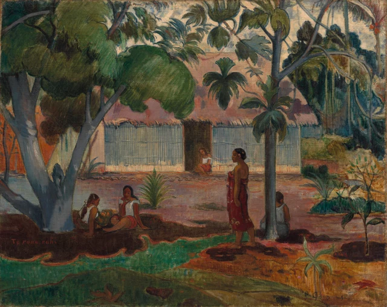

Commençons par les plages de couleur qui se touchent. En haut, un vert dense. Au milieu, une large étendue rose, puis un bleu-gris clair. À nos pieds, le brun sombre du sol cède brusquement la place à une bande d’un vert turquoise lumineux. On reconnaît vite les arbres, la maison et la cour. Mais avant même de les nommer, les couleurs ont déjà proposé un parcours au regard : entrer sous la masse verte, traverser l’espace clair devant la maison, puis revenir vers le premier plan en suivant les courbes du sol.
La fraîcheur de l’ombre prend forme dans ces rencontres entre couleurs.

La lecture proposée ici est la suivante : Gauguin fait de cette cour un lieu reconnaissable et, simultanément, une organisation de couleurs qui possède son propre rythme. La largeur du feuillage, l’horizontalité de la maison, les branches obliques et les intervalles entre les personnages rendent sensible la possibilité de s’y abriter. Cette force de conviction appartient à la peinture. En déduire que la vie représentée serait paisible constitue un autre jugement.
Gauguin arrive pour la première fois à Tahiti en 1891. Le Grand Arbre compte parmi les tableaux qu’il y réalise au début de son séjour. Il a déjà expérimenté en Europe les grandes plages colorées et la simplification des contours. Les arbres, la maison et les figures d’un lieu particulier rencontrent donc une manière de peindre acquise auparavant. Le musée de Cleveland souligne la disposition en frise des femmes du premier plan et le contraste entre ombre et soleil. Ces deux observations peuvent se vérifier directement devant l’image. Documentation du musée
Un feuillage qui recouvre la maison
Le grand arbre se dresse à gauche, mais sa couronne s’étend jusqu’au centre. Il n’est pas relégué dans un lointain paysage. Son épais tronc bleu-gris monte tout près de nous, puis se divise vers la gauche et vers la droite. Une branche oblique conduit l’œil jusqu’au toit. La base s’élargit ; plus haut, quelques passages gris clair interrompent les faces sombres des fourches. Le tronc possède assez de volume pour porter toute cette verdure.
La manière de regrouper les feuilles mérite qu’on s’y attarde. À gauche, plusieurs masses vert foncé se fondent presque les unes dans les autres. Vers le centre, les branches avancées portent des bouquets plus clairs et largement arrondis. Des touches obliques les animent, mais les pointes de chaque feuille sont rarement détaillées. Le détail reste subordonné au contour du groupe : une masse descend en arrondi, une autre ménage une échancrure sur le toit. Le feuillage paraît ainsi luxuriant tout en gardant la force de quelques grandes formes dans la partie supérieure du tableau.
Le rose apparaît entre ces formes. Regardé seul, le toit ressemble à une étendue tranquille et presque plane. Dès que l’on remarque les branches qui passent devant, il redevient le toit d’une maison située plus loin. Le rose lui-même varie : il s’assombrit près des feuilles, tandis que de courtes marques foncées hérissent son bord inférieur. Dans l’ensemble, il conserve pourtant une continuité suffisante pour faire ressortir les verts dispersés.

Le recouvrement agit de deux façons. Il situe l’arbre devant la maison et transforme les parties roses visibles en formes découpées entre les feuilles. Paysage et motif décoratif se constituent au même endroit. Ici, le décoratif tient au plaisir de suivre des plages colorées qui se jouxtent, se répètent et s’emboîtent sur la toile. La profondeur de la cour reste perceptible.
L’arbre plus mince, à droite, organise le vert autrement. Ses branches se divisent en hauteur et portent des groupes de feuilles suspendus, séparés les uns des autres. Entre eux restent visibles le ciel clair et le rose du toit. À gauche, la couronne forme une couverture épaisse ; à droite, les feuilles inscrivent des accents inégalement espacés sur un fond lumineux. Un arbre abrite par sa masse, l’autre anime le toit par ses intervalles. Ils soutiennent ensemble la composition sans se répondre de manière symétrique.
Les intervalles entre les corps
Le mur se déploie de part et d’autre sous un bord de toiture presque horizontal. Ses nombreuses marques verticales établissent une direction distincte de celle des branches. Vers le centre, une porte sombre interrompt la paroi claire. Un personnage de plus petite taille est assis à l’entrée. Son échelle, ainsi que le mur qui l’entoure, redonne de la profondeur à cette longue bande bâtie.
Les quatre femmes du premier plan forment une autre suite horizontale. À gauche, deux sont assises assez près l’une de l’autre, l’une de profil, l’autre davantage tournée vers nous. Leurs vêtements blancs émergent des tons sombres. Plus à droite, une femme vêtue de rouge se tient debout ; son corps relie le sol à peu près au milieu du mur. Au-delà, le tronc mince masque partiellement une autre figure assise. Le gris clair de son dos rejoint les tons froids de l’arbre et de la maison.
Les distances qui les séparent sont très inégales. Autour des deux figures de gauche, vêtements, corps et formes sombres se resserrent. Entre elles et la femme debout s’ouvre une large portion de cour. Une plante y déploie ses feuilles pointues dans plusieurs directions et donne à cet espace libre son propre centre. Les personnages ne sont pas distribués comme des unités identiques dans une bordure. Proximité et éloignement, positions assises et debout introduisent des pauses de longueurs différentes dans le parcours du regard.

L’étoffe rouge attire fortement l’attention, sans occuper le centre exact de la toile. Elle comporte des nuances et de petits motifs près de son bord inférieur, mais conserve la forme générale d’une plage rouge étroite et allongée. Elle répond au vaste toit rose : celui-ci s’étend latéralement, le vêtement se dresse. L’un ouvre l’espace, l’autre rassemble le regard sur un corps particulier. Leur différence d’intensité colorée les empêche de se confondre dans un même plan.
La femme debout tourne la tête vers la gauche. Son bras descend le long du corps ; un pied s’avance légèrement vers l’extérieur. Elle relie les figures assises de gauche à l’arbre de droite sans imposer un geste théâtral à toute la scène. Les regards ne convergent pas non plus vers un événement unique. Pour comprendre l’organisation du tableau, il est plus fécond de suivre la place des corps parmi les couleurs : le blanc sort de l’ombre, le rouge traverse un sol clair, la figure de droite revient contre le bleu-gris du tronc.
Ainsi comprise, la disposition en frise n’aplatit pas tous les personnages. La petite silhouette dans la porte, les corps plus grands du premier plan et les recouvrements par les troncs maintiennent les distances. Les reprises de couleur les réunissent sur la toile. Le regard entre dans la cour tout en parcourant latéralement la surface peinte. Une grande part de la vitalité du tableau tient à ce double mouvement.
L’importance du vert turquoise au sol
Dans un tableau nommé d’après un arbre, le sol pourrait sembler n’avoir d’autre fonction que de le porter. En supprimant une bande au bas de l’image, on perdrait pourtant bien plus que quelques morceaux de terrain : on retrancherait la transition la plus vive de toute la composition.
Sous l’arbre de gauche s’étend une large zone brun sombre. Son contour avance et se retire en courbes successives. Une étroite lisière chaude la borde, immédiatement suivie d’un vert turquoise éclatant. Ce vert part du bas gauche et s’engage vers le centre, se rétrécit près des pieds de la femme debout, puis voisine avec une ample plage ocre orangé. Il ne recule pas selon les lignes régulières d’un dallage. Courbes, pointes et intensité colorée font entrer le terrain proche directement dans notre regard.
En suivant cette limite, l’œil rencontre une succession très précise : bande sombre et large, mince ligne chaude, brusque éclaircie turquoise, puis étendue orange plus épaisse. L’écart entre ombre et soleil devient presque tangible. Sans devoir attribuer chaque tache à un modèle exact d’éclairage, nous percevons le passage de l’abri à la lumière.
L’ombre reste ouverte. Les carnations et les vêtements blancs la percent ; le tronc bleu-gris s’en élève ; la bande lumineuse voisine donne à sa limite un tracé que l’on peut suivre. La zone sombre semble habitable parce qu’elle communique avec le reste du tableau. Une masse obscure sans distinctions internes ferait moins nettement sentir un lieu où s’installer.
Tout en bas, un vert plus sourd forme une nouvelle bande. De petites formes brunes et des feuilles basses s’y dispersent : le terrain lumineux ne s’écoule donc pas simplement hors du cadre. À droite, une plante relève plusieurs longues feuilles claires, dont le mouvement répond aux bouquets suspendus au-dessus. Après avoir suivi les courbes du sol, le regard retrouve une voie vers la cime. Les feuilles dressées dans la partie basse reprennent ce changement de direction et relient le sol aux bouquets du haut dans un mouvement de va-et-vient.
Les couleurs ne sont d’ailleurs pas parfaitement lisses. Le fichier officiel permet de distinguer des lignes courtes, des variations évoquant des frottements, ainsi que la texture de la surface. Les verticales serrées du mur, les touches obliques groupées dans les feuilles et les marques plus dispersées au sol possèdent chacune leur orientation. Vues de loin, les grandes plages colorées gardent leur unité ; de près, elles révèlent encore des mouvements à l’intérieur de leurs limites. La surface visible ne suffit toutefois pas à reconstituer l’ordre d’application de la peinture. Les craquelures et l’usure actuelle ne sont pas présentées ici comme des effets recherchés par Gauguin.
Une fraîcheur composée
Le plaisir offert par cette peinture est immédiat : le vert est dense, le rose ample, les troncs bleu-gris solides, et le turquoise du bas apporte un accent clair. Ces couleurs intenses ne se disputent pas toutes la même place. Le feuillage occupe le haut, la maison traverse le milieu, les figures relient différentes hauteurs et le terrain dessine ses courbes en dessous. Chaque partie possède sa forme et reçoit de la force de ses voisines.
Cette organisation peut donner un sentiment d’apaisement, voire faire imaginer la fraîcheur sous les arbres. Ainsi disposée, la cour devient une scène où le regard peut séjourner. Replacer cet apaisement dans le projet artistique de Gauguin au moment de son départ pour Tahiti permet aussi de voir ses liens avec l’imaginaire européen de la vie outre-mer.
Un contexte précis est ici utile. Dans son étude pour le Metropolitan Museum of Art, Cindy Kang relève le rôle des pavillons coloniaux de l’Exposition universelle de Paris de 1889 dans les attentes de Gauguin à l’égard d’une vie outre-mer. Son projet tahitien reste également lié à ses ambitions dans l’avant-garde parisienne. Le paradis imaginé loin de l’Europe a donc déjà été façonné par des regards, des dispositifs d’exposition et une compétition artistique européens. Ce contexte peut participer au sens de l’œuvre sans apparaître sous la forme d’un emblème peint. L’étude de Cindy Kang
C’est notre compréhension de l’harmonie qui s’en trouve modifiée. L’arbre, le toit, les vêtements blancs et l’étoffe rouge peuvent toujours nous plaire. Nous voyons aussi des formes choisies, simplifiées et organisées pour constituer un Tahiti qu’un peintre européen présente à ses spectateurs. Les personnes ont des gestes et des positions spécifiques ; l’harmonie de la palette ne permet pas de parler à leur place d’une vie sans souci. Les branches qui divisent le toit et les bandes du sol qui animent l’espace sont précisément les moyens concrets par lesquels cette harmonie se construit.
Le Grand Arbre mérite qu’on s’y arrête pour cette double clarté. On peut montrer comment l’abri devient séduisant et reconnaître la position depuis laquelle cette séduction est proposée. Le feuillage dense ne recouvre pas tout. Le rose demeure entre les feuilles, le terrain libre s’étend entre les corps et les branches modifient sans cesse le rythme de la tranquillité horizontale. Gauguin compose un lieu où le regard accepte de séjourner. La force de sa peinture tient à des arrangements auxquels nous pouvons revenir.
Lecture facultative Proximité et distance avec SAE
Cet exercice mobilise la théorie SAE, Self-as-an-End, de Han Qin comme approche contemporaine du regard. Il ne permet pas d’attribuer une intention à Gauguin ni une vie intérieure à ses personnages.
Le cadre général de SAE parle d’« internalité du contexte » : le contexte est une composante de la beauté. Cette piste permet de replacer le tableau dans le contexte des regards européens sur Tahiti, puis de demander à nouveau : l’ombre invite à s’approcher, mais le tableau rend-il les personnages aussi accessibles ? SAE, section 3.2
Suivons d’abord le turquoise du bas vers les deux femmes assises à gauche. Les vêtements blancs font sortir les corps de l’obscurité, tandis que le tronc épais occupe un côté du groupe. Les deux femmes sont tournées différemment ; celle qui nous fait davantage face laisse mieux voir son visage. Regardons ensuite la femme debout en rouge et la figure assise à droite : l’une tourne la tête de côté, l’autre nous présente son dos et reste partiellement cachée par le tronc. Les couleurs relient les corps en une suite lisible, mais visages et corps ne se tournent pas tous vers le spectateur. L’œil circule aisément entre les plages colorées ; son approche des personnes connaît des pauses.
Essayons maintenant de décrire le tableau avec les mots « accessible » et « distant », en trouvant deux appuis visibles pour chacun. Le premier peut s’appuyer sur la couverture du feuillage ou sur les vêtements blancs au bord de la terre sombre. Le second peut renvoyer au dos tourné, au tronc qui masque la figure assise ou au petit personnage dans la porte, au-delà de la cour ouverte. Réunies dans l’ensemble du tableau, ces observations font apparaître une relation : ce qui rend la cour accueillante à la contemplation laisse aussi les personnes partiellement hors d’atteinte du regard.
Le contexte colonial donne ici du poids à une question précise : lorsque nous apprécions cette cour, prenons-nous la proximité construite par le tableau pour une compréhension des personnes qui l’habitent ? Cette lecture propose que la couleur fasse du lieu un espace où le regard peut séjourner, tandis que l’orientation et le masquage des corps maintiennent un intervalle. Cet intervalle peut être montré dans l’image. Au prochain regard, suivons à la fois l’invitation des couleurs et la distance que les corps conservent, pour examiner leur coexistence.
Images et sources
L’analyse visuelle repose sur le JPEG officiel du Cleveland Museum of Art, de 3400 × 2695 pixels. L’image entière est conservée telle qu’elle a été téléchargée. Les deux détails sont de simples recadrages conservant les pixels à leur résolution d’origine et le profil ICC incorporé. Aucune correction colorimétrique, accentuation, reconstitution ou génération de contenu n’a été effectuée. L’écran reste une condition de vision différente de celle de l’original.
Les images sont proposées selon la politique d’accès ouvert CC0 du musée. Ce texte est une interprétation indépendante et n’engage pas l’institution. Les sources historiques et théoriques sont liées dans le texte et recensées dans les Références ; les origines des images, les coordonnées des recadrages et les informations de vérification figurent dans les Crédits iconographiques.